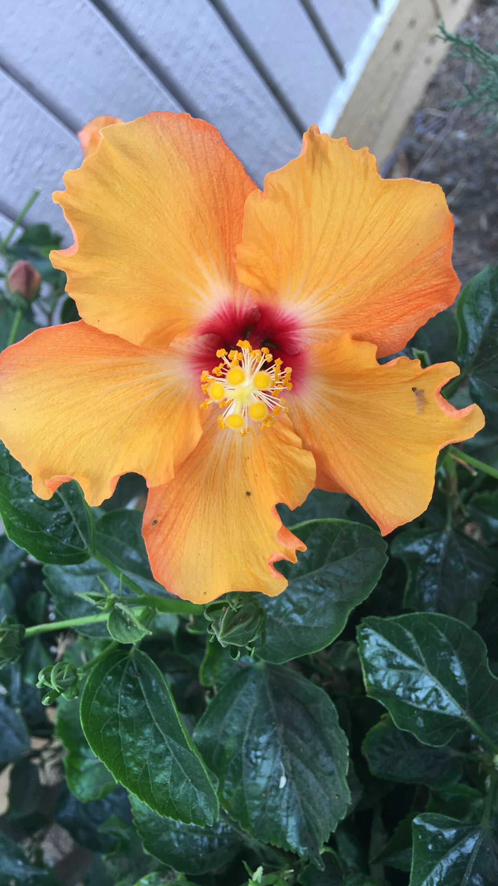
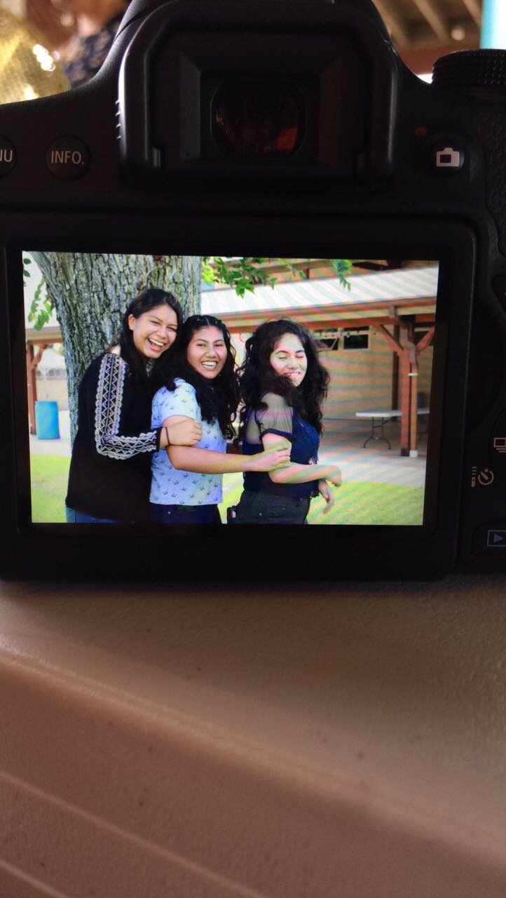

About Me
My name is Cecilia Mendoza, and I am currently a junior. I spend most of my time focused on academics,
either studying or completing my homework. During my free time, I enjoy reading, listening to music, going out for
walks, and hanging out with friends. I am also intrigued by how the world and human mind works, so I tend to spend my
time doing research and learning about my surroundings. I aspire to continue growing as a person. As the year progress,
I became more involved around my school and community. I became vice-president of the National Honors Society and
started volunteering at my local library.
Reflection
Computer Science Principles was a class that I enjoyed. Overall the class
was challenging; however, if I had the chance to take it again I definitely would without a doubt.
This class enabled me to expand my critical thiking skills as well as my sense of creativity.
Even though, there were times when I became frustrated and taught the program was not going to
fucntion, I continued trying to find a method that could solve a problem. This has been one of
the classes I enjoy the most because it expose me to the reality of the technological world we
live in and the fact that technology is a great tool. I was also able to connect this course
with digital electronics due to the number systems. The assigments during the course were complex,
nevertheless I did not mind spending time completing them, hours could go bye, and I would find
myself trying to find methods to improve the programs. I enjoyed this class to a great extent and
also recommend it to anyone that is considering taking it. Computer Science is something that I
am considering for the future.


